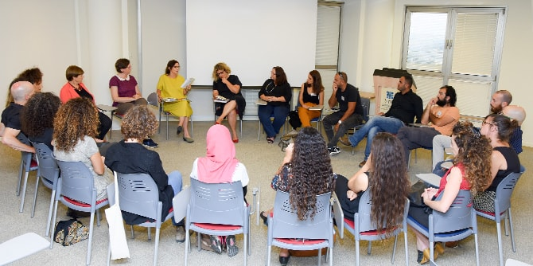
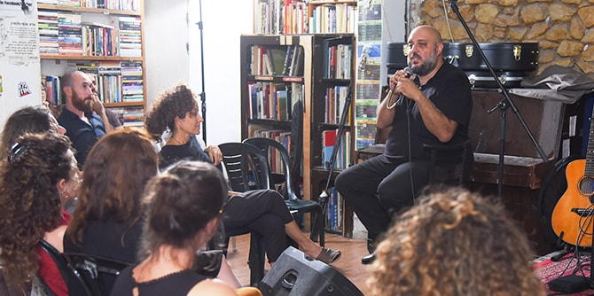

The new Mandel Program for Cultural Leadership in the Negev opened on October 8, 2018, with a session that explored the links between identity, place, and culture.
The opening study session brought together the program's participants for the first time. Included among them are local artists, cultural entrepreneurs, and directors of artistic and cultural institutions from localities throughout the Negev, who are active in a diverse range of artistic fields, including cinema, music, dance, theater, and design.
Dr. Rotem Bresler-Gonen, the program director, who leads the program together with
Professor Dana Arieli, welcomed the participants to the program. She noted that the most up-to-date thinking about the economic, social, and cultural development of the Negev is based on a broad regional approach. For this reason, bringing together participants from diverse places and backgrounds inspires hope for a shared cultural and artistic space that cuts across community boundaries.

Dr. Adi Nir Sagi, director of the Mandel Center for Leadership in the Negev, led a group study session of a text by the Indian artist Shilpa Gupta. The analysis of the text inspired a discussion about the social responsibility of artists to view the world around them through a prism of complexity, and to work to change it.
Afterwards, the group moved on to a musical session with
David Peretz, a prominent Negev musician and poet, which took place at the “Ashan Hazman” club in the Old City of Beer Sheva. As part of this meeting, there was an open dialogue moderated by faculty member
Dr. Nitza Roskin, which explored the significance of writing local poetry in Beer Sheva, about developing identity that is rooted in the city, and about the creation of music that gives a voice to local people.

{kind=link}
{kind=link}